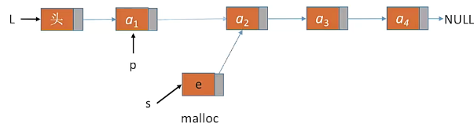
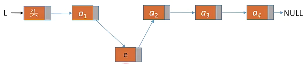

数据结构-第一章：线性表
线性表的定义和基本操作
线性表的定义
线性表时具有相同数据类型的n个数据元素的有限序列，其中n为表长，n=0时为空表。若用L命名线性表，则其一般表示为$L=(a_1,a_2,…,a_i,…,a_n)$。
- 每个数据元素所占空间一样大
- 有次序
$a_1$是表头元素，$a_2$是表为元素。
除第一个元素外，每个元素有且仅有一个直接前驱；除最后一个元素外，每个元素有且仅有一个直接后继。
线性表的基本操作：
顺序表
顺序表的定义
顺序表的定义
顺序表：用顺序存储的方式实现线性表。
顺序存储：把逻辑上相邻的元素存储在物理位置上页相邻的存储单元中。
顺序表的实现—静态分配
静态分配使用静态数组定义方式实现，数组长度一旦大小确定就不可再改变。1
2
3
4
5
6
7
8
9
10
11
12
13//顺序表的定义
typeof struct{
ElemType data[MaxSize]; //静态数组存放元素
int length; //顺序表当前长度
}SqList; //顺序表类型定义
//初始化一个顺序表
void InitList(SqList &L){
for(int i=0; i<MaxSize; i++)
L.data[i]=0 //②将所有数据元素设置为默认初始值（可省略）
L.length=0 //③顺序表初始长度为0
}
1 | int main(){ |
如果省略上述代码初始化方法中for循环部分，内存中会有遗留的脏数据。但是只有违规操作才会取到脏数据，所以循环部分可省略。
数组存满后，是无法扩容的，只能放弃治疗。
顺序表的实现—动态分配
动态分配需要定义一个指针指向顺序表的第一个元素。
动态申请和释放空间：malloc/free函数
malloc返回一个指针，需要强制转型为你定义的数据元素类型指针。
malloc函数的参数指明要分配多大的连续内存空间。1
p=(ElemType *)malloc(sizeof(ElemType)*InitSize);
代码
1 |
|
1 | int main(){ |
在执行①后，会先分配一片空间存储顺序表的指针、最大长度和当前长度这三个变量。
执行②后会在内存申请一片连续空间，同时令顺序表指针指向该片空间的首元素。
执行③时，先令指针p指向原空间，用来保存数据。并开辟一片新的更大的空间。
再令顺序表的指针指向新空间，并将p中的元素复制到新空间中。
然后释放p指向的空间（原数组），然后p指针自动被释放。
可以看出，动态分配的时间开销更大。
顺序表的特点
- 随机访问：可以在O(1)时间内找到低i个元素
- 存储密度高，每个节点值存储数据元素
- 扩容不方便
- 插入删除操作不方便，需要移动大量元素
顺序表的插入删除
本节以静态分配的代码为例，动态分配也差不多。
即：1
2
3
4
5
typeof struct{
ElemType data[MaxSize]; //静态数组存放元素
int length; //顺序表当前长度
}SqList;
插入
在表L中的第i个位置上插入指定元素e。
代码
1 | bool ListInsert(SqList &L, int i, int e) |
时间复杂度
- 最好情况：插入在表尾，O(1)
- 最坏情况：插入在表头，O(n)
- 平均情况：假设新元素插入到任一位置的概率相同，即所有位置概率均为$p=\frac{1}{n+1}$，则平均循环次数$=np+(n-1)p+(n-2)p+……+1p=p=\frac{n}{2}$
删除
删除表L中第i个位置上的元素并返回其值。
代码
1 | bool ListDelete(SqList &L, int i, int &e) |
1 | int main{ |
时间复杂度
- 最好情况：删除表尾，O(1)
- 最坏情况：删除表头，O(n)
- 平均情况：假设新元素插入到任一位置的概率相同，即所有位置概率均为$p=\frac{1}{n+1}$，则平均循环次数$=np+(n-1)p+(n-2)p+……+1p=p=\frac{n}{2}$
顺序表的查找
按位查找
获取表L中第i个位置元素的值。
代码
实际上无论静态分配还是动态分配，代码都一样。1
2
3ElemType GetElem(SqList L,int i){
return L,data[i-1];
}
时间复杂度
随机存取：O(1)
按值查找
在表L中查找具有给定关键字值的元素。
代码
1 | int LocateElem(SqList L,ElemType e){ |
注意，①处使用==是因为变量是基本类型变量，如果是结构体，需要自定义方法判断是否相等。但一般考研时若无明确要求，使用==即可。
时间复杂度
- 最好情况：所找元素在表头：O(1)
- 最坏情况：所找元素在表尾：O(n)
- 平均情况：假设新元素插入到任一位置的概率相同，即所有位置概率均为$p=\frac{1}{n+1}$，则平均循环次数$=np+(n-1)p+(n-2)p+……+1p=p=\frac{n}{2}$
链表
单链表的定义
单链表的节点除了存放数据元素外，还需要存储指向下一个节点的指针。
- 优点：不要求大片连续空间，改变容量方便
- 缺点：不可随机存取，存储指针耗费空间
1 | struct LNode{ //定义单链表节点类型 |
单链表的两种定义方式
一般使用带头结点的链表。
不带头结点
1 | //初始化 |
1 | void test(){ |
带头结点
1 | //初始化 |
1 | void test(){ |
单链表的插入删除
单链表的按位序插入
带头结点
在表L中的第i个位置插入指定元素e。
插入的操作主要为：
先找到（通过p结点实现“找到”）第i-1（这里以i=2为例）个结点。
申请一个新结点，并令新结点指向第i个结点。
再将第i-1个结点的后继结点指向新结点。

即完成插入操作。
代码实现为：1
2
3
4
5
6
7
8
9
10
11
12
13
14
15
16
17
18
19
20//初始化
bool ListInsert(LinkList &L, int i, ElemType e){
if(i<1)
return false;
LNode *p; //指针p指向当前扫描到的结点
int j=0; //当前p指向的时第几个结点
p=L; //L指向头结点
while(p!=NULL && j<i-1){ //循环找到第i-1个结点
p=p->next;
j++;
}
if(p==NULL) //i值不合法
return false;
//以上操作为找到第i-1个结点
LNode *s=(LNode *)malloc(sizeof(LNode));
s->data=e;
s->next=p->next;
p-next=s;
return true;
}
平均时间复杂度：O(n)
不带头结点
思路与带头结点的没有区别，只是当i=1是需要特别处理。
代码为：1
2
3
4
5
6
7
8
9
10
11
12
13
14
15
16
17
18
19
20
21
22
23
24
25
26
27//初始化
bool ListInsert(LinkList &L, int i, ElemType e){
if(i<1)
return false;
if(i==1){
LNode *s=(LNode *)malloc(sizeof(LNode));
s->data=e;
s->next=L;
L=s; //头指针指向新结点
return true;
}
LNode *p;
int j=1;
p=L; //L指向第一个结点，注意不是头结点
while(p!=NULL && j<i-1){ //循环找到第i-1个结点
p=p->next;
j++;
}
if(p==NULL)
return false;
//以上操作为找到第i-1个结点
LNode *s=(LNode *)malloc(sizeof(LNode));
s->data=e;
s->next=p->next;
p-next=s;
return true;
}
后插操作
给定结点，在结点后插入数据。1
2
3
4
5
6
7
8
9
10
11
12//初始化
bool InsertNextNode(LNode &p, ElemType e){
if(p==NULL)
return false;
LNode *s=(LNode *)malloc(sizeof(LNode));
if(s==NULL) //内存分配失败
return false;
s->data=e;
s->next=p->next;
p-next=s;
return true;
}
可以发现，基本与插入操作类似，同时插入操作也可以改写为：1
2
3
4
5
6
7
8
9
10
11
12
13
14
15
16//初始化
bool ListInsert(LinkList &L, int i, ElemType e){
if(i<1)
return false;
LNode *p; //指针p指向当前扫描到的结点
int j=0; //当前p指向的时第几个结点
p=L; //L指向头结点
while(p!=NULL && j<i-1){ //循环找到第i-1个结点
p=p->next;
j++;
}
if(p==NULL) //i值不合法
return false;
//以上操作为找到第i-1个结点
return InsertNextNode(p, e);
}
前插操作
给定结点，在结点前插入数据e。
主要思路为：
申请新结点，并令其作为给定结点的后继节点
令复制给定结点的数据元素至新结点
令给定结点的值为e
代码为：1
2
3
4
5
6
7
8
9
10
11
12
13//初始化
bool InsertPriorNode(LNode &p, ElemType e){
if(p==NULL)
return false;
LNode *s=(LNode *)malloc(sizeof(LNode));
if(s==NULL)
return false;
s->next=p->next;
p->next=s;
s->data=p->data;
p->data=e;
return true
}
时间复杂度为O(1)。